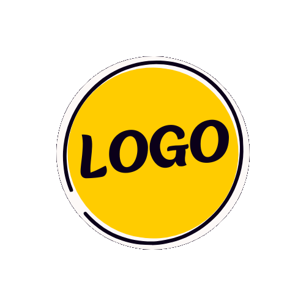

<!DOCTYPE html>
<html lang="en">
    <head>
        <!--========Meta Tags SEO======-->
        <meta charset="UTF-8">
        <meta http-equiv="X-UA-Compatible" content="IE=edge">
        <meta name="viewport" content="width=device-width, initial-scale=1.0">

        <!--========Title===== -->
        <title>YUGESH KUMAR | Timeline</title>

        <!--========Links===== -->
        <link rel="shortcut icon" type="image/png" href="../img/about.png">
        <link rel="stylesheet" href='./style.css'>
        <script src="https://cdn.tailwindcss.com"></script>
        <link href='https://unpkg.com/boxicons@2.1.4/css/boxicons.min.css' rel='stylesheet'>
    </head>
    <body>
        
        <header class="header" id="header">
            <a class="logo">Yugesh Kumar</a>
            <input type="checkbox" id="menu-toggle" class="menu-toggle">
            <label for="menu-toggle" class="menu-icon"><i class='bx bx-menu'></i></label>
            <nav class="navbar" id="myLinks">
                <a href="../index.html#Home">Home</a>
                <a href="../index.html#About">About</a>
                <a href="../index.html#Skills">Skills</a>
                <a href="../index.html#Projects">Projects</a>
                <a href="../index.html#Contact">Contact</a>
            </nav>
        </header>

        <section id="Accademics"class="acc-sec">
            <center><h1>Accademic <span>Details</span></h1></center>
            <div class="timeline-container">
                <!-- Academics Timeline -->
                <div class="timeline academics">
                    <div class="containerTline left-container">
                        
                        <div class="text-box">
                            <h2 class="hed">SSLC</h2>
                            <h2>Swami Shivananda Higher Secondary School</h2>
                            <small>2014 - 2015</small>
                            <p>I successfully completed my SSLC at SSLC Swami Shivananda Higher School, achieving a commendable score of 75% in the Tamil Nadu State Board exams.</p>
                            <span class="left-container-arrow"></span>
                        </div>
                    </div>
                    <div class="containerTline right-container">
                        
                        <div class="text-box">
                            <h2 class="hed">HSC</h2>
                            <h2>Sri Ragavendra Higher Secondary School</h2>
                            <small>2016 - 2017</small>
                            <p>I completed my HSC in the Computer Science department at Sri Ragavendra Higher Secondary School, attaining a score of 70% in the Tamil Nadu State Board exams.</p>
                            <span class="right-container-arrow"></span>
                        </div>
                    </div>
                    <div class="containerTline left-container">
                        
                        <div class="text-box">
                            <h2 class="hed">Bachelor of Engineering</h2>
                            <h2>Park College of Engineering and Technology</h2>
                            <small>2017 - 2021</small>
                            <p>I graduated from Institute with a B.E. in Aeronautical Engineering (AE), achieving a CGPA of 72.45 (equivalent to 72%) in the Anna University exams.</p>
                            <span class="left-container-arrow"></span>
                        </div>
                    </div>
                </div>
            </div>
        </section>

        <section id="Experiance" class="exp-sec">
            <center><h1>Experiance <span>Details</span></h1></center>
            <div class="timeline-container">
                <!-- Internships Timeline -->
                <div class="timeline internships">
                    <div class="containerTline right-container">
                        
                        <div class="text-box">
                            <h2 class="hed">Trigent Software Private Limited</h2>
                            <h2>Assistant Engineer | Internship</h2>
                            <small>2022 - 2023</small>
                            <p>Junior Software Engineering intern at Trigent Software Private
Limited, where I gained hands-on experience in various tools,
including SVN, Jenkins, and Jira. Learned and applied software
development methodologies while contributing to the team's
projects.
Collaborated effectively with team members to deliver high-quality
software solutions..</p>
                            <span class="right-container-arrow"></span>
                        </div>
                    </div>
                    <div class="containerTline left-container">
                        
                        <div class="text-box">
                            <h2 class="hed">TrueWise Service Private Limited</h2>
                            <h2>Software Engineering</h2>
                            <small>July 2023</small>
                            <p>I completed an Software Engineering at company in July 2023, where I received hands-on training in SQL and Java to create a desktop application. Additionally, I developed an application to manage the work progress of the staff.</p>
                            <span class="left-container-arrow"></span>
                        </div>
                    </div>
                    <div class="containerTline right-container">
                        
                        <div class="text-box">
                            <h2 class="hed">Company</h2>
                            <h2>Kubernetikos Infosec LLP</h2>
                            <small>Currently 2024</small>
                            <p>currently working at Kubernetikos
Infosec LLP, I have developed robust and scalable web applications using
Java technologies. At Kubernetikos, I am working on two key projects: VCare, a product built with Java, Spring Boot, and MongoDB, and the
Thirumala website, where I focus on bug fixing and maintenance using
React and Vite. I have designed and implemented both front-end and
back-end components, collaborated effectively with development teams
and product managers to meet client requirements.</p>
                            <span class="right-container-arrow"></span>
                        </div>
                    </div>
                </div>
            </div>
        </section>

        <!--========Scripts===== -->
        <script src="./script.js"></script>
    </body>
</html>